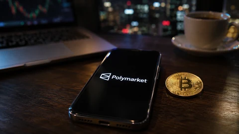

Financial news, market analysis and technology
Top Story
Market Analysis View all →

Market Analysis
Brent Near $98 as Iran Shipping Incidents Put Monday's Market Open on Watch
The Gulf's Sunday stock-market declines offered an early response to fresh maritime incidents, while oil futures have yet to price the full weekend's news.
Market Analysis
India's Nifty Surges as Oil Prices Slide and Nasdaq Enters Correction
India's benchmark shares outperformed US technology stocks as falling oil prices eased pressure on importers and markets faced a fresh inflation test.

Market Analysis
Asian Markets Drop as US Chip Selloff Spreads, Then Wall Street Stabilizes
Japan and South Korea bore the brunt of Friday's global technology retreat, while American shares ended a volatile session mostly higher.

Market Analysis
Wall Street's Week: AI Selloff, Strong Jobs and a Fed Rate Debate
The Nasdaq fell 3.4% for the week and the S&P 500 lost 2.7% despite a Friday rebound, as investors weighed jobs data, AI valuations and next week's CPI.
Tech & AI View all →

Tech & AI
Anthropic's Reported $3.4 Billion Generator Deal Puts AI's Power Constraint in Focus
A reported arrangement for 1.7 gigawatts of gas-fired generating equipment shows why securing electricity has become a capital-intensive part of the AI infrastructure race.

Tech & AI
AI Week Ahead: OpenAI Cyber Keynote, NVIDIA Seoul and Cloud Earnings
OpenAI's cybersecurity event and AI infrastructure earnings are scheduled for the coming week, while Anthropic's prospective IPO roadshow remains unconfirmed.

Tech & AI
DeepMind AI Agents Cut RSA-1024 Research Costs, but Larger Gains Remain Theoretical
Google researchers report a faster reproduction of a known cryptographic computation and two mathematical advances; the findings are not evidence that modern RSA systems have been broken.
Tech & AI
Democrats Prepare AI and Data Center Bills Ahead of New Congress
Incoming Democratic congressional leaders are preparing proposals on data center electricity costs, independent model testing and AI company liability.
Crypto View all →

Crypto
Ether ETF Outflows Continue as Ethereum Developers Review Glamsterdam Risks
Weekly fund withdrawals and a separately announced testnet delay raise different questions for Ethereum: investor demand and the safety of a planned network upgrade.
Crypto
Bitcoin Near $75,800 Faces Fifth Straight Losing Week
Bitcoin approached Sunday's weekly close with four consecutive declines behind it, but two historical comparisons cannot predict the next move.

Crypto
Bitcoin Prediction Markets Price a $70,000 Retest as Traders Weigh Year-End Risks
Prices on Polymarket and Kalshi suggest continued uncertainty, but their contracts measure different outcomes and should not be treated as a single forecast.

Crypto
Bitcoin and Ether ETFs Shed $1.65 Billion in a Week as BlackRock Leads Outflows
U.S. spot bitcoin and ether funds posted about $1.65 billion in combined weekly net outflows, with BlackRock accounting for most of the losses.
News Feed